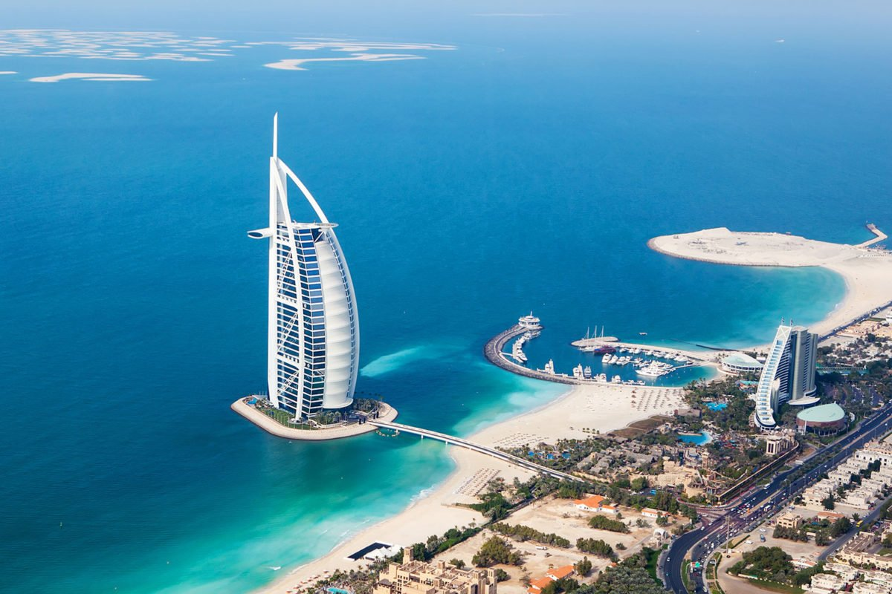
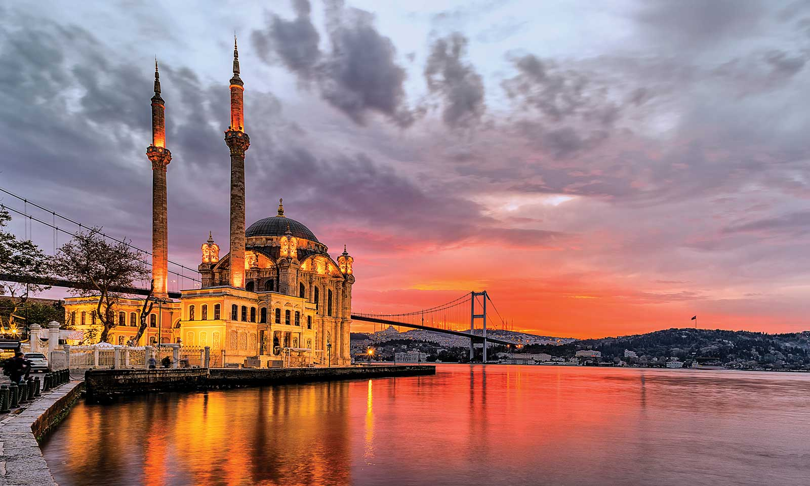
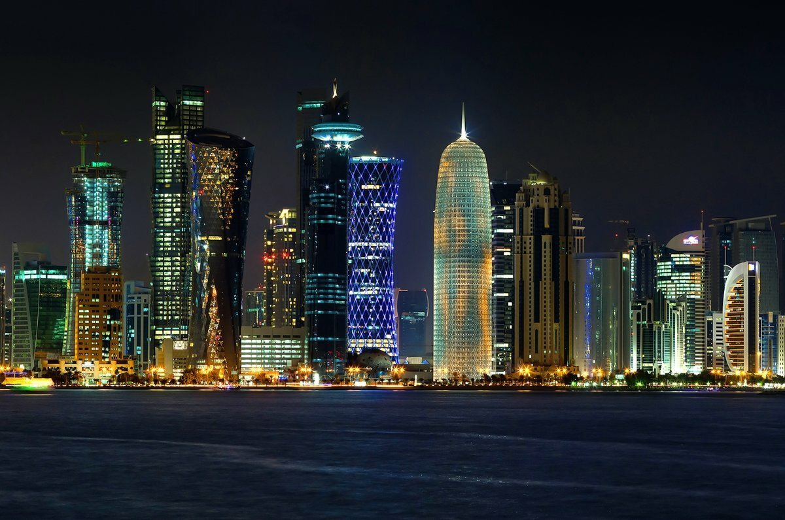
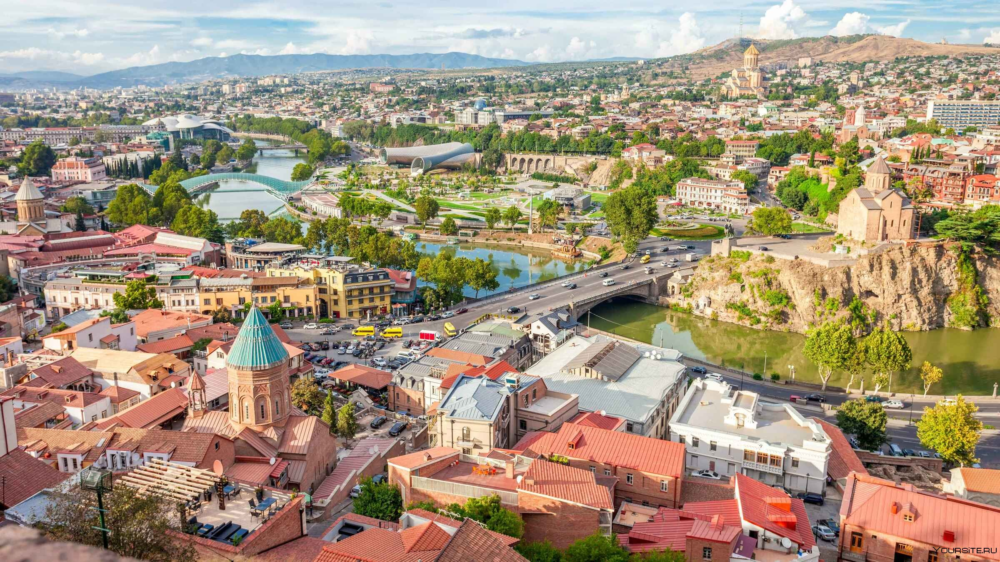

| Город | Описание | Фотография |
|---|---|---|
| Дубай | Эмират в ОАЭ. Расположен на Аравийском полуострове на юге Персидского залива. Среди семи эмиратов, входящих в состав страны, занимает первое место по численности населения и второе после Абу-Даби по площади. |
 |
| Стамбул | Крупнейший город Турции, главный торговый, промышленный и культурный центр, основной порт страны. По численности населения третий город в Европе. |
 |
| Доха | Столица и крупнейший город арабского государства Катар, расположенный у побережья Персидского залива. Административный центр муниципалитета Ад-Доха |
 |
| Тбилиси | Столица и крупнейший город Грузии, расположенный на берегу реки Куры с населением около 1,2 миллиона человек. Город был основан в V веке. Тбилиси - важнейший промышленный, социальный и культурный центр Грузии |
 |